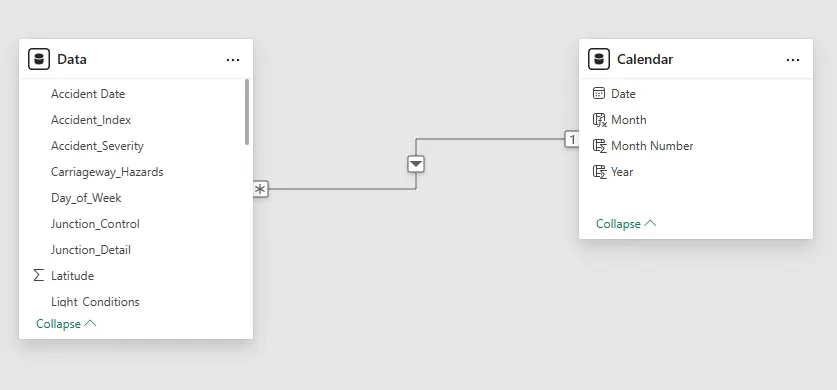

This project focused on developing a dynamic and interactive Power BI dashboard from start to finish for Road Accident Analysis. The primary objective was to leverage road accident data for 2021 and 2022 to derive critical insights. The dashboard was designed to meet specific client requirements, including calculating Primary KPIs such as total casualties, total accidents, and year-on-year growth. Secondary KPIs involved analyzing casualties based on severity (fatal, serious, slight), vehicle types, road types, area locations (urban/rural), and light conditions (day/night). The visualization also aimed to identify accident hotspots by location.
Detailed Report — For More Information
Homepage
Table of Contents
Project Summary
Project Environment
This project used only the Free Version of Power BI.
Scope & Project Steps
Scope
End-to-end development of an interactive dashboard using Power BI, Power Query, and DAX to analyze two years of road accident data.
Project Steps
Connected raw Excel data (307k rows) to Power BI Desktop
Cleaned data in Power Query Editor by correcting typographical errors (e.g., replacing 'fetal' with 'fatal')
Created a custom Calendar Table using DAX for Time Intelligence functions
Established a one-to-many relationship between the Calendar Table and the main data table
Wrote complex DAX measures for Current Year (YTD), Previous Year, and Year-on-Year growth calculations
Built and formatted various visualizations (KPI cards, Area Chart, Donut Charts, Bar Chart and Map)
Implemented Slicers (Road Surface, Weather Conditions) for dynamic filtering
Data Sources & Data Gathering
Data Sources
The raw data utilized for this project was an Excel file. This file served as the database, containing approximately 307,000 rows and 21 columns.
Data Gathering
The Excel can be seen in Road Safety Data.
Data Modeling, Measures and Schema
Data Modeling
# Data Table
Calendar =
CALENDAR(MIN(Data[Accident Date]), MAX(Data[Accident Date]))
DAX Measures
# Current Year Accidents
Current Year Accidents =
TOTALYTD(COUNT(Data[Accident_Index]), 'Calendar'[Date])
# Current Year Casualties
Current Year Casualties =
TOTALYTD(SUM(Data[Number_of_Casualties]), 'Calendar'[Date])
# Previous Year Accidents
Previous Year Accidents =
CALCULATE(COUNT(Data[Accident_Index]), SAMEPERIODLASTYEAR('Calendar'[Date]))
# Previous Year Casualties
Previous Year Casualties =
CALCULATE(SUM(Data[Number_of_Casualties]), SAMEPERIODLASTYEAR('Calendar'[Date]))
# Year on Year Accidents
Year on Year Accidents =
([2022 Accidents] - [Previous Year Accidents]) / [Previous Year Accidents]
# Year on Year Accidents Text
Year on Year Accidents Text =
VAR _YoYA = [Year on Year Accidents] VAR _Result = SWITCH(TRUE(), _YoYA = BLANK(), "", _YoYA < 0, "▼ " & FORMAT(_YoYA, "0.00" & "%"), _YoYA >= 0, "▲ " & FORMAT(_YoYA, "0.00" & "%")) RETURN _Result
# Year on Year Casualties
Year on Year Casualties =
([Current Year Casualties] - [Previous Year Casualties]) / [Previous Year Casualties]
# Year on Year Casualties Text
Year on Year Casualties Text =
VAR _YoYC = [Year on Year Casualties] VAR _Result = SWITCH(TRUE(), _YoYC = BLANK(), "", _YoYC < 0, "▼ " & FORMAT(_YoYC, "0.00" & "%"), _YoYC >= 0, "▲ " & FORMAT(_YoYC, "0.00" & "%")) RETURN _Result
Schema

Final Dashboard

Homepage